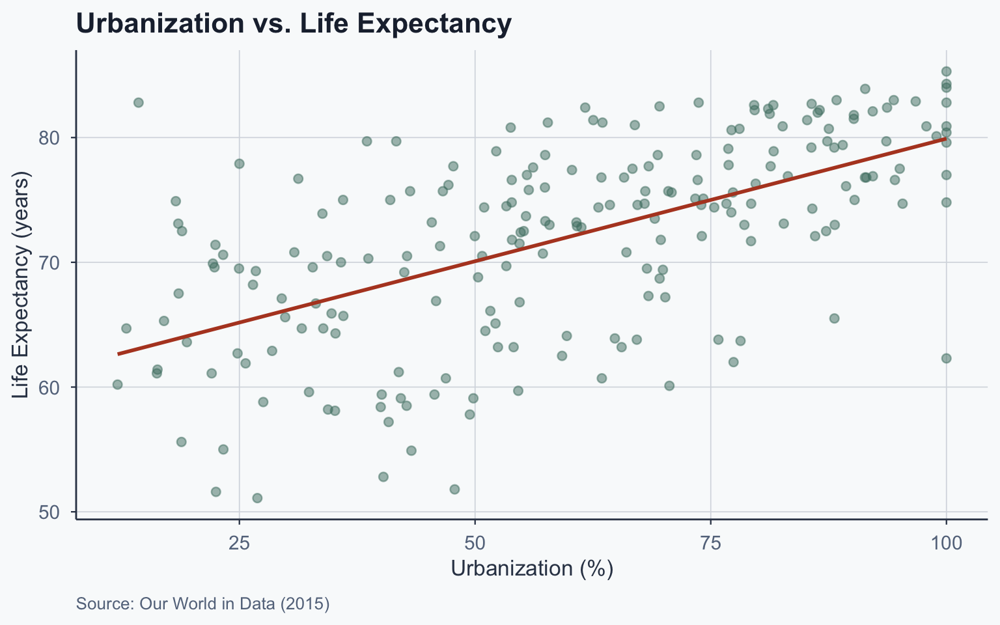
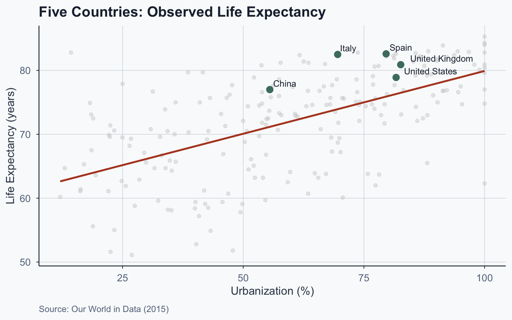
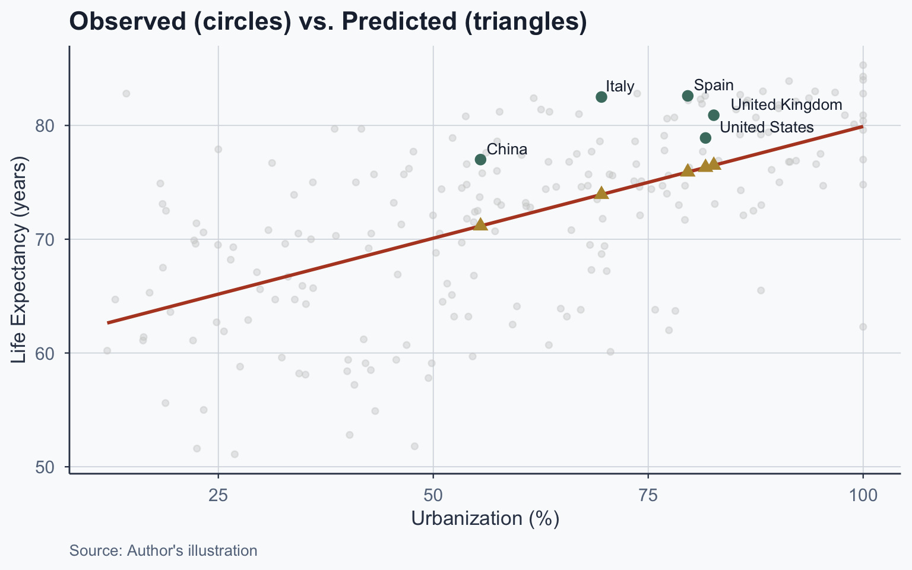
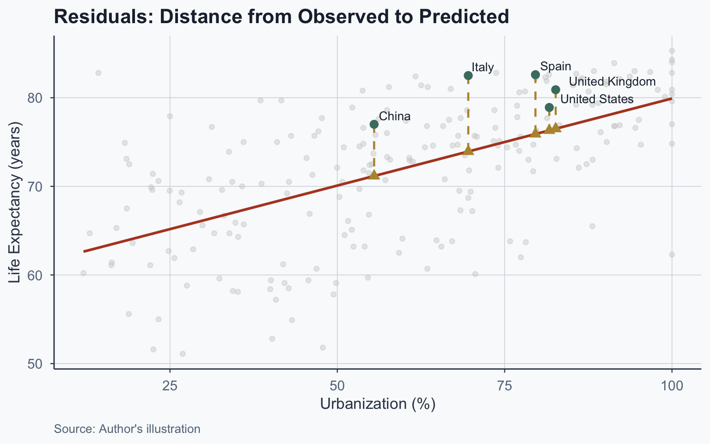
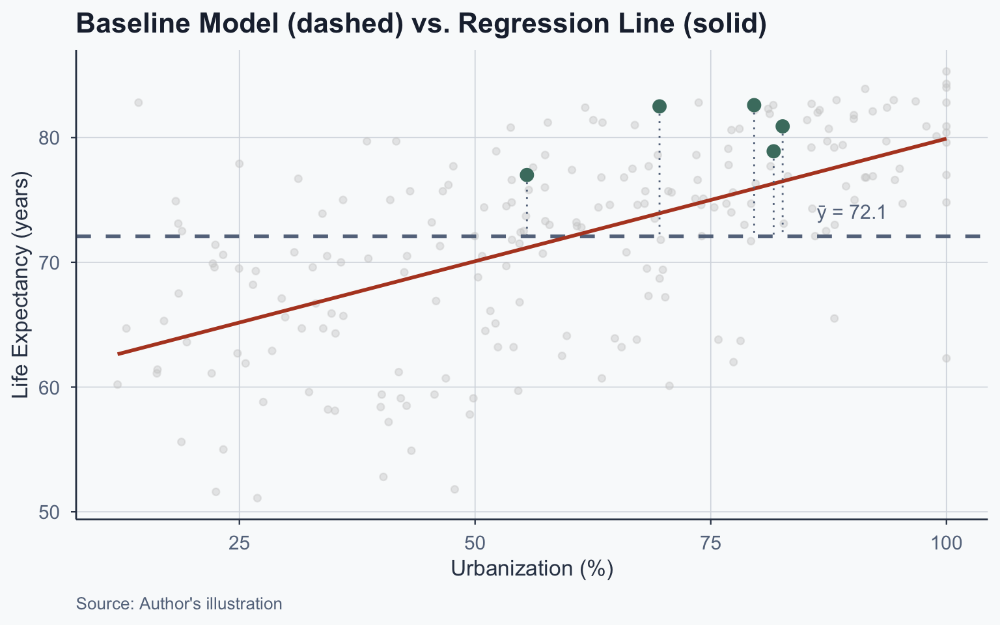
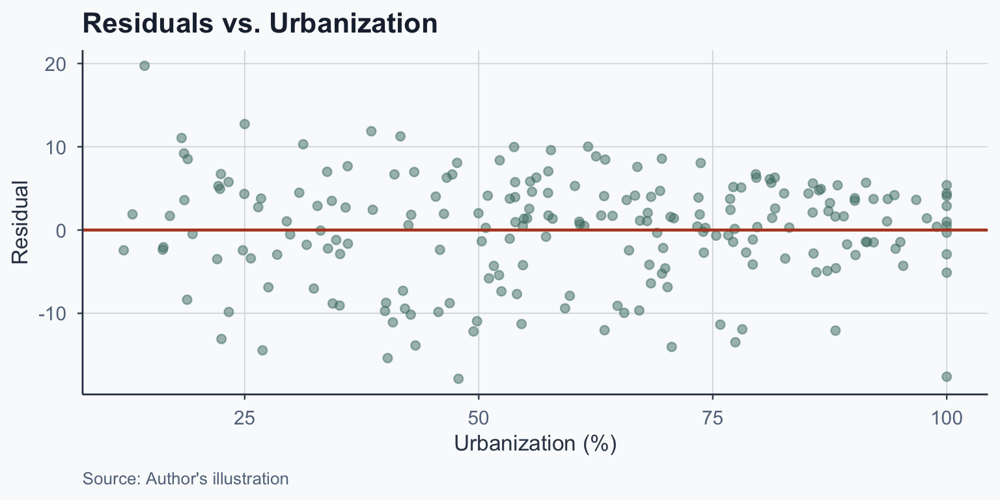
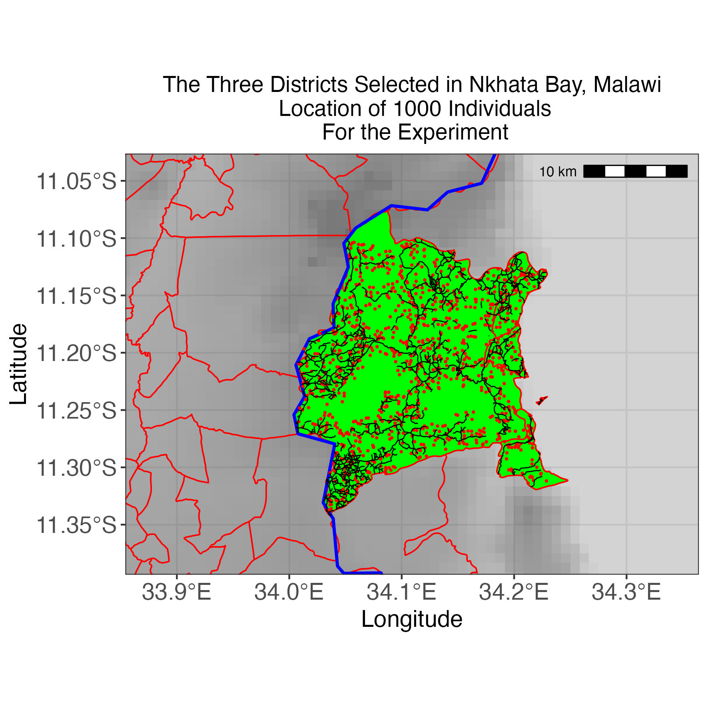
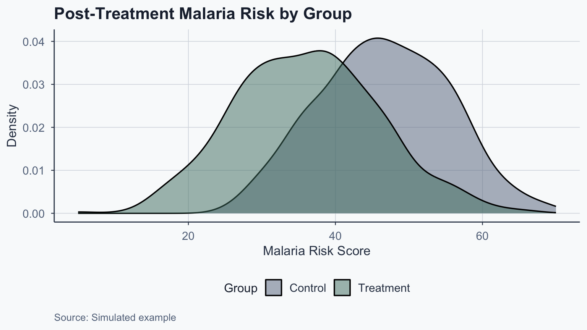

![]()
| Statistic | Formula | Value |
|---|---|---|
| Mean of X (urbanization) | \(\bar{X} = \frac{\sum X_i}{n}\) | 60.132 |
| Mean of Y (life expectancy) | \(\bar{Y} = \frac{\sum Y_i}{n}\) | 72.078 |
Statistical Analysis
Lecture 9: Bivariate Regression
Introduction
From Correlation to Regression
- Previously: Pearson correlation coefficient (\(r\))
- Measures strength and direction of a linear relationship
- Limitation: \(X\) and \(Y\) are interchangeable
- \(r\) does not distinguish IV from DV
- Today: regression lets us predict \(Y\) from \(X\)
- Assigns roles: \(X\) is the predictor, \(Y\) is the outcome
Pearson Correlation (Recap)
\[ r = \frac{\frac{\sum(X_i - \bar{X})(Y_i - \bar{Y})}{n}}{s_X \cdot s_Y} \]
- Ranges from \(-1\) to \(+1\)
- Does not imply causation
- Treats \(X\) and \(Y\) symmetrically
Notation
Population vs. Sample Notation
Before building the regression equation, we distinguish population parameters from sample statistics:
| Concept | Population | Sample |
|---|---|---|
| Mean | \(\mu_X\), \(\mu_Y\) | \(\bar{X}\), \(\bar{Y}\) |
| Std. Dev. | \(\sigma_X\), \(\sigma_Y\) | \(s_X\), \(s_Y\) |
| Size | \(N\) | \(n\) |
- We observe the sample but want to learn about the population
Sample Standard Deviation
\[s_Y = \sqrt{\frac{\sum_{i=1}^{n}(Y_i - \bar{Y})^2}{n}}\]
- \(Y_i\): the \(i\)th value of variable \(Y\)
- \(\bar{Y}\): sample mean of \(Y\)
- \(n\): sample size
Regression Notation
The regression equation can be written two equivalent ways:
\[\hat{Y} = bX + a \quad \text{or} \quad \hat{y} = \hat{\beta}_0 + \hat{\beta}_1 x + \epsilon\]
| Symbol | Equivalent | Meaning |
|---|---|---|
| \(\hat{\beta}_0\) | \(a\) | Intercept |
| \(\hat{\beta}_1\) | \(b\) | Slope |
| \(\epsilon\) | Error term |
Estimates vs. True Values
\[\hat{y} = \hat{\beta}_0 + \hat{\beta}_1 x + \epsilon \quad \text{(sample estimate)}\]
\[y = \beta_0 + \beta_1 x + \epsilon \quad \text{(true population)}\]
- The hat (\(\hat{}\)) denotes an estimate from sample data
- \(\hat{\beta}_1\) is our best guess of the true \(\beta_1\)
- \(b\) and \(\hat{\beta}_1\) refer to the same quantity
The Regression Line
The Regression Equation
We make predictions with regressions:
\[\hat{Y}_i = bX_i + a\]
- \(\hat{Y}_i\): predicted value of the dependent variable
- \(X_i\): observed value of the independent variable
- \(b\) (\(\hat{\beta}_1\)): slope — change in \(Y\) per unit of \(X\)
- \(a\) (\(\hat{\beta}_0\)): intercept — predicted \(Y\) when \(X = 0\)
Similar to \(y = mx + b\) from algebra
Computing the Slope (\(b\))
\[b = r \cdot \frac{s_Y}{s_X}\]
- \(r\): correlation between \(X\) and \(Y\)
- \(s_Y\): standard deviation of \(Y\)
- \(s_X\): standard deviation of \(X\)
Computing the Intercept (\(a\))
Once we know \(b\), we compute \(a\) using the sample means:
\[a = \bar{Y} - b\bar{X}\]
- The regression line passes through \((\bar{X}, \bar{Y})\)
Caution on interpreting \(a\): The intercept is the predicted \(Y\) when \(X = 0\). If \(X = 0\) does not exist in the data, \(a\) is an out-of-sample extrapolation and may not be substantively meaningful.
Worked Example
Our Running Example
Question: Does urbanization predict life expectancy?
- \(X\) = urbanization (% urban population)
- \(Y\) = life expectancy (years)
- \(n\) = 214 countries (2015 data)
Step 1: Compute Means
Step 2: Compute Standard Deviations
| Statistic | Value |
|---|---|
| SD of X | 23.9784 |
| SD of Y | 7.8963 |
\[s_X = \sqrt{\frac{\sum(X_i - \bar{X})^2}{n}} = 23.9784\]
\[s_Y = \sqrt{\frac{\sum(Y_i - \bar{Y})^2}{n}} = 7.8963\]
Step 3: Compute the Correlation
\[r = \frac{\frac{\sum(X_i - \bar{X})(Y_i - \bar{Y})}{n}}{s_X \cdot s_Y} = 0.5968\]
Step 4: Compute \(b\) and \(a\)
\[b = r \cdot \frac{s_Y}{s_X} = 0.5968 \times \frac{7.8963}{23.9784} = 0.1965\]
\[a = \bar{Y} - b\bar{X} = 72.078 - 0.1965 \times 60.132 = 60.2599\]
Our regression equation:
\[\hat{Y}_i = 0.1965 \cdot X_i + 60.2599\]
Summary of Parameters
| Parameter | Value |
|---|---|
| X-bar (mean urbanization) | 60.1322 |
| Y-bar (mean life expectancy) | 72.0776 |
| s_X | 23.9784 |
| s_Y | 7.8963 |
| r (correlation) | 0.5968 |
| b (slope) | 0.1965 |
| a (intercept) | 60.2599 |
Building the Table Step by Step
Table: Original Data
| Entity | Life Expectancy | Urbanization |
|---|---|---|
| Afghanistan | 62.7 | 24.803 |
| Albania | 78.6 | 57.434 |
| Algeria | 75.6 | 70.848 |
| American Samoa | 72.5 | 87.238 |
| … | … | … |
| Zimbabwe | 59.6 | 32.385 |
| X-bar | 60.132 |
Table: Adding \(\bar{Y}\)
| Entity | Life Expectancy | Urbanization |
|---|---|---|
| Afghanistan | 62.7 | 24.803 |
| Albania | 78.6 | 57.434 |
| Algeria | 75.6 | 70.848 |
| American Samoa | 72.5 | 87.238 |
| … | … | … |
| Zimbabwe | 59.6 | 32.385 |
| X-bar | 60.132 | |
| Y-bar | 72.078 |
Table: Adding \(b\)
\(b = r \cdot \frac{s_Y}{s_X} = 0.1965\)
| Entity | Life Expectancy | Urbanization | b |
|---|---|---|---|
| Afghanistan | 62.7 | 24.803 | 0.1965 |
| Albania | 78.6 | 57.434 | 0.1965 |
| Algeria | 75.6 | 70.848 | 0.1965 |
| American Samoa | 72.5 | 87.238 | 0.1965 |
| … | … | … | … |
| Zimbabwe | 59.6 | 32.385 | 0.1965 |
| X-bar | 60.132 | ||
| Y-bar | 72.078 |
Table: Adding \(a\)
\(a = \bar{Y} - b\bar{X} = 60.2599\)
| Entity | Life Exp. | Urbanization | b | a |
|---|---|---|---|---|
| Afghanistan | 62.7 | 24.803 | 0.1965 | 60.2599 |
| Albania | 78.6 | 57.434 | 0.1965 | 60.2599 |
| Algeria | 75.6 | 70.848 | 0.1965 | 60.2599 |
| American Samoa | 72.5 | 87.238 | 0.1965 | 60.2599 |
| … | … | … | … | … |
| Zimbabwe | 59.6 | 32.385 | 0.1965 | 60.2599 |
| X-bar | 60.132 | |||
| Y-bar | 72.078 |
Table: Adding \(\hat{Y}\) (Operations)
\(\hat{Y}_i = b \cdot X_i + a\)
| Entity | Life Exp. | Urbanization | b | a | Y-hat |
|---|---|---|---|---|---|
| Afghanistan | 62.7 | 24.803 | 0.1965 | 60.2599 | 0.197 * 24.803 + 60.26 |
| Albania | 78.6 | 57.434 | 0.1965 | 60.2599 | 0.197 * 57.434 + 60.26 |
| Algeria | 75.6 | 70.848 | 0.1965 | 60.2599 | 0.197 * 70.848 + 60.26 |
| American Samoa | 72.5 | 87.238 | 0.1965 | 60.2599 | 0.197 * 87.238 + 60.26 |
| … | … | … | … | … | … |
| Zimbabwe | 59.6 | 32.385 | 0.1965 | 60.2599 | 0.197 * 32.385 + 60.26 |
| X-bar | 60.132 | ||||
| Y-bar | 72.078 |
Table: Adding \(\hat{Y}\) (Results)
| Entity | Life Exp. | Urbanization | b | a | Y-hat |
|---|---|---|---|---|---|
| Afghanistan | 62.7 | 24.803 | 0.1965 | 60.2599 | 65.1344 |
| Albania | 78.6 | 57.434 | 0.1965 | 60.2599 | 71.5473 |
| Algeria | 75.6 | 70.848 | 0.1965 | 60.2599 | 74.1835 |
| American Samoa | 72.5 | 87.238 | 0.1965 | 60.2599 | 77.4046 |
| … | … | … | … | … | … |
| Zimbabwe | 59.6 | 32.385 | 0.1965 | 60.2599 | 66.6245 |
| X-bar | 60.132 | ||||
| Y-bar | 72.078 |
Five Countries: Step by Step
Five Countries: \(\hat{Y}\) Operations
\(\hat{Y}_i = b \cdot X_i + a\)
| Entity | Life Exp. | Urbanization | b | a | Y-hat |
|---|---|---|---|---|---|
| China | 77 | 55.5 | 0.1965 | 60.2599 | 0.197 * 55.5 + 60.26 |
| Italy | 82.5 | 69.565 | 0.1965 | 60.2599 | 0.197 * 69.565 + 60.26 |
| Spain | 82.6 | 79.602 | 0.1965 | 60.2599 | 0.197 * 79.602 + 60.26 |
| United Kingdom | 80.9 | 82.626 | 0.1965 | 60.2599 | 0.197 * 82.626 + 60.26 |
| United States | 78.9 | 81.671 | 0.1965 | 60.2599 | 0.197 * 81.671 + 60.26 |
| X-bar | 60.132 | ||||
| Y-bar | 72.078 |
Five Countries: \(\hat{Y}\) Results
| Entity | Life Exp. | Urbanization | b | a | Y-hat |
|---|---|---|---|---|---|
| China | 77 | 55.5 | 0.1965 | 60.2599 | 71.1672 |
| Italy | 82.5 | 69.565 | 0.1965 | 60.2599 | 73.9314 |
| Spain | 82.6 | 79.602 | 0.1965 | 60.2599 | 75.9039 |
| United Kingdom | 80.9 | 82.626 | 0.1965 | 60.2599 | 76.4982 |
| United States | 78.9 | 81.671 | 0.1965 | 60.2599 | 76.3105 |
| X-bar | 60.132 | ||||
| Y-bar | 72.078 |
Five Countries: Residual Operations
\(\text{residual}_i = Y_i - \hat{Y}_i\)
| Entity | Life Exp. | Urb. | b | a | Y-hat | Residual |
|---|---|---|---|---|---|---|
| China | 77 | 55.5 | 0.1965 | 60.2599 | 71.1672 | 77 - 71.167 |
| Italy | 82.5 | 69.565 | 0.1965 | 60.2599 | 73.9314 | 82.5 - 73.931 |
| Spain | 82.6 | 79.602 | 0.1965 | 60.2599 | 75.9039 | 82.6 - 75.904 |
| United Kingdom | 80.9 | 82.626 | 0.1965 | 60.2599 | 76.4982 | 80.9 - 76.498 |
| United States | 78.9 | 81.671 | 0.1965 | 60.2599 | 76.3105 | 78.9 - 76.311 |
| X-bar | 60.132 | |||||
| Y-bar | 72.078 |
Five Countries: Residual Results
| Entity | Life Exp. | Urb. | b | a | Y-hat | Residual |
|---|---|---|---|---|---|---|
| China | 77 | 55.5 | 0.1965 | 60.2599 | 71.1672 | 5.8328 |
| Italy | 82.5 | 69.565 | 0.1965 | 60.2599 | 73.9314 | 8.5686 |
| Spain | 82.6 | 79.602 | 0.1965 | 60.2599 | 75.9039 | 6.6961 |
| United Kingdom | 80.9 | 82.626 | 0.1965 | 60.2599 | 76.4982 | 4.4018 |
| United States | 78.9 | 81.671 | 0.1965 | 60.2599 | 76.3105 | 2.5895 |
| X-bar | 60.132 | |||||
| Y-bar | 72.078 |
Making Predictions
Prediction Exercise 1
If a country has urbanization of 77%, what is the predicted life expectancy?
\[\hat{Y} = 0.1965 \times 77 + 60.2599 = 75.393\]
Prediction Exercise 2
If a country has urbanization of 10%, what is the predicted life expectancy?
\[\hat{Y} = 0.1965 \times 10 + 60.2599 = 62.225\]
Plotting the Regression Line
Scatterplot: Urbanization vs. Life Expectancy

Five Countries: Observed Values

Five Countries: Predicted Values

Residuals
What Is a Residual?
The residual is the difference between observed and predicted:
\[\text{residual}_i = Y_i - \hat{Y}_i\]
- Negative residual: country scored lower than predicted
- Positive residual: country scored higher than predicted
The regression line minimizes the overall size of residuals — it is the line of best fit
Visualizing Residuals

Residuals Table
| Country | Y (Observed) | Ŷ (Predicted) | Residual |
|---|---|---|---|
| China | 77.0 | 71.167 | 5.833 |
| Italy | 82.5 | 73.931 | 8.569 |
| Spain | 82.6 | 75.904 | 6.696 |
| United Kingdom | 80.9 | 76.498 | 4.402 |
| United States | 78.9 | 76.311 | 2.589 |
Baseline Model & R²
The Baseline Model
The simplest “model” predicts \(\bar{Y}\) for everyone:
\[\hat{Y}_i^{\text{baseline}} = \bar{Y}\]
- Baseline residual: \(Y_i - \bar{Y}\)
- How much does our regression improve over this?
Comparing Residuals
| Country | Y | Ŷ | Resid (Regression) | Resid (Baseline) |
|---|---|---|---|---|
| China | 77.0 | 71.167 | 5.833 | 4.922 |
| Italy | 82.5 | 73.931 | 8.569 | 10.422 |
| Spain | 82.6 | 75.904 | 6.696 | 10.522 |
| United Kingdom | 80.9 | 76.498 | 4.402 | 8.822 |
| United States | 78.9 | 76.311 | 2.589 | 6.822 |
Visualizing the Baseline

Sum of Squared Residuals
We square residuals and sum them:
Total Sum of Squares (SST) — baseline model:
\[SST = \sum_{i=1}^{n}(Y_i - \bar{Y})^2 = 1.334313\times 10^{4}\]
Sum of Squared Residuals (SSR) — regression model:
\[SSR = \sum_{i=1}^{n}(Y_i - \hat{Y}_i)^2 = 8590.86\]
R-Squared (\(R^2\))
\[R^2 = \frac{SST - SSR}{SST} = 1 - \frac{SSR}{SST}\]
\[R^2 = 1 - \frac{8590.86}{1.334313\times 10^{4}} = 0.3562\]
Interpretation: Urbanization explains 35.6% of the variance in life expectancy
Interpreting \(R^2\)
- \(R^2\) ranges from 0 to 1
- \(R^2 = 0\): model explains nothing
- \(R^2 = 1\): model explains everything
“Our model explains X% of the variance in the outcome variable.”
Practice: If \(R^2 = 0.4532\), how do you interpret it?
“Our model explains 45% of the variance in the outcome.”
Running Regressions in R
The lm() Function
Call:
lm(formula = life_expectancy ~ urbanization, data = final)
Residuals:
Min 1Q Median 3Q Max
-17.861 -3.301 1.042 4.297 19.729
Coefficients:
Estimate Std. Error t value Pr(>|t|)
(Intercept) 60.25992 1.17483 51.29 <2e-16 ***
urbanization 0.19653 0.01815 10.83 <2e-16 ***
---
Signif. codes: 0 '***' 0.001 '**' 0.01 '*' 0.05 '.' 0.1 ' ' 1
Residual standard error: 6.366 on 212 degrees of freedom
Multiple R-squared: 0.3562, Adjusted R-squared: 0.3531
F-statistic: 117.3 on 1 and 212 DF, p-value: < 2.2e-16Reading R Output: Coefficients
| Term | Estimate | Meaning |
|---|---|---|
(Intercept) |
60.2599 | \(a\) — predicted \(Y\) when \(X = 0\) (extrapolation!) |
urbanization |
0.1965 | \(b\) — change in \(Y\) per unit \(X\) |
- Std. Error: precision of the estimate
- t value: \(\text{Estimate} / \text{Std. Error}\)
- Pr(>|t|): p-value for \(H_0: \beta = 0\)
***: \(p < 0.001\) (highly significant)
Reading R Output: Model Fit
- Multiple R-squared: 0.3562 — variance explained
- F-statistic: overall model significance
- Residual standard error: typical prediction error
Standard Errors
Standard Error of \(b\)
\[SE(b) = \sqrt{\frac{1}{n-2} \cdot \frac{\sum(Y_i - \hat{Y}_i)^2}{\sum(X_i - \bar{X})^2}}\]
- Numerator: sum of squared residuals (\(SSR\))
- Denominator: spread of \(X\) values
- Smaller SE → more precise estimate
Computing SE(b)
\[SE(b) = \sqrt{\frac{1}{214-2} \cdot \frac{8590.86}{1.2304188\times 10^{5}}} = 0.018148\]
This matches the R output: 0.018148
OLS Assumptions
Three Assumptions for Unbiasedness
We want \(\hat{\beta}_1 = \beta_1\) (unbiased). Three assumptions:
- Linearity: \(Y\) is linearly related to \(X\)
- Random Sampling: observations are independently drawn
- Zero Conditional Mean: \(E(\epsilon | X) = 0\)
Zero Conditional Mean
\(E(\epsilon | X) = 0\) means: knowing \(X\) tells you nothing about the error
- For any value of \(X\), the average error is zero
- The unobserved factors affecting \(Y\) are uncorrelated with \(X\)
This is the assumption most frequently violated in observational data — and the most consequential
Why Zero Conditional Mean Fails
When an omitted variable affects both \(X\) and \(Y\):
Example: Urbanization \(\rightarrow\) Life Expectancy
- Wealthier countries are more urbanized and have better healthcare
- GDP affects both \(X\) (urbanization) and \(Y\) (life expectancy)
- Our estimate of \(b\) absorbs the effect of GDP \(\rightarrow\) omitted variable bias
Other violations: reverse causality (\(Y\) also causes \(X\)) and selection bias (non-random sample)
What Omitted Variable Bias Means
If \(E(\epsilon | X) \neq 0\):
- \(\hat{\beta}_1 \neq \beta_1\) — our slope estimate is biased
- The regression still describes the data accurately
- But it does not give us a causal effect of \(X\) on \(Y\)
Solutions: randomized experiments, instrumental variables, or controlling for confounders (future lectures)
Homoskedasticity
Beyond unbiasedness, for valid standard errors we also need:
- Homoskedasticity: \(\text{Var}(\epsilon | X) = \sigma^2\) for all values of \(X\)
- The spread of residuals is constant across \(X\)
If violated (heteroskedasticity):
- \(\hat{\beta}_1\) is still unbiased
- But standard errors, t-values, and p-values become unreliable
Diagnosing Heteroskedasticity
Plot residuals vs. \(X\) and look for patterns:
- Homoskedastic: points form a roughly even band around zero
- Heteroskedastic: spread fans out (or narrows) as \(X\) increases

Addressing Heteroskedasticity
If the residual plot shows fanning or clustering:
- Use robust standard errors (Huber-White / HC standard errors)
- These adjust SE calculations without changing \(\hat{\beta}_1\)
- In R:
lmtest::coeftest(model, vcov = sandwich::vcovHC)
Binary Explanatory Variables
Regression with a Dummy Variable
So far, \(X\) was continuous. What if \(X\) is binary (0 or 1)?
\[y = \beta_0 + \beta_1 x + \epsilon\]
- When \(x = 0\): \(E(y | x=0) = \beta_0\)
- When \(x = 1\): \(E(y | x=1) = \beta_0 + \beta_1\)
\[\beta_1 = E(y | x=1) - E(y | x=0)\]
\(\beta_1\) is the difference in group means
Example: EU Membership
Question: Do EU countries have higher life expectancy?
Call:
lm(formula = life_expectancy ~ eu, data = final)
Residuals:
Min 1Q Median 3Q Max
-19.898 -5.062 1.373 5.077 14.302
Coefficients:
Estimate Std. Error t value Pr(>|t|)
(Intercept) 70.9979 0.5413 131.165 < 2e-16 ***
eu 8.5577 1.5239 5.616 6.1e-08 ***
---
Signif. codes: 0 '***' 0.001 '**' 0.01 '*' 0.05 '.' 0.1 ' ' 1
Residual standard error: 7.402 on 212 degrees of freedom
Multiple R-squared: 0.1295, Adjusted R-squared: 0.1254
F-statistic: 31.54 on 1 and 212 DF, p-value: 6.099e-08Interpreting the EU Result
- \(\hat{\beta}_0 = 70.998\): average life expectancy for non-EU countries
- \(\hat{\beta}_1 = 8.558\): EU countries live 8.558 years longer on average
\[\beta_1 = E(\text{Life Exp.} | \text{EU}=1) - E(\text{Life Exp.} | \text{EU}=0)\]
Caution: this does not prove EU membership causes longer life
Counterfactuals & Policy Analysis
Binary Variables and Causality
Binary regressions are central to policy analysis:
- Treatment group (\(x = 1\)) vs. control group (\(x = 0\))
- \(\beta_1\) = treatment effect (causal if properly designed)
Examples of policy interventions:
- Free iPads \(\rightarrow\) educational outcomes
- Plastic bag ban \(\rightarrow\) pollution reduction
- Job training \(\rightarrow\) income increase
The Average Treatment Effect
%%{init:{"theme":"base","themeVariables":{"fontSize":"22px","primaryColor":"#4a7c6f","primaryTextColor":"#1e293b","lineColor":"#334155"},"flowchart":{"useMaxWidth":true,"nodeSpacing":60,"rankSpacing":80}}}%%
flowchart LR
A["Random<br/>Assignment"] --> B["Treatment<br/>(x = 1)"]
A --> C["Control<br/>(x = 0)"]
B --> D["Outcome<br/>Y₁"]
C --> E["Outcome<br/>Y₀"]
D --> F["ATE =<br/>Ȳ₁ − Ȳ₀"]
E --> F
\[ATE = E(\bar{Y} | x=1) - E(\bar{Y} | x=0)\]
Example: Malaria Bed Nets in Malawi
The World Bank evaluated insecticide-treated bed nets:
- Setting: 1,000 people in Malawi
- Treatment: randomly assigned bed nets
- Outcome: malaria risk

Malaria RCT Results
Call:
lm(formula = malaria_post ~ net, data = rct_data)
Residuals:
Min 1Q Median 3Q Max
-31.1804 -6.4519 -0.0199 6.5294 30.3102
Coefficients:
Estimate Std. Error t value Pr(>|t|)
(Intercept) 46.5707 0.4262 109.27 <2e-16 ***
net -10.3903 0.5899 -17.61 <2e-16 ***
---
Signif. codes: 0 '***' 0.001 '**' 0.01 '*' 0.05 '.' 0.1 ' ' 1
Residual standard error: 9.318 on 998 degrees of freedom
Multiple R-squared: 0.2371, Adjusted R-squared: 0.2364
F-statistic: 310.2 on 1 and 998 DF, p-value: < 2.2e-16Interpreting the Treatment Effect
\[ATE = \bar{Y}_{\text{treatment}} - \bar{Y}_{\text{control}} = 36.18 - 46.57 = -10.39\]
- Bed nets reduce malaria risk by 10.39 units
- The effect is statistically significant (\(p < 0.001\))
- Random assignment ensures this is a causal estimate
Treatment vs. Control Distribution

Conclusion
Summary
- Notation first: \(\hat{\beta}_0\) and \(\hat{\beta}_1\) are sample estimates of population parameters
- Regression equation: \(\hat{Y} = bX + a\) predicts the outcome from a predictor
- Intercept: may be an out-of-sample extrapolation — interpret with care
- Residuals: \(Y_i - \hat{Y}_i\) — the regression line minimizes these
- \(R^2\): proportion of variance explained by the model
- Zero conditional mean: the key OLS assumption — violated when confounders are omitted
- Binary regressors: \(\beta_1\) is the difference in group means
- Randomized experiments enable causal interpretation of \(\beta_1\)
Popescu (JCU) Statistical Analysis Lecture 9: Bivariate Regression